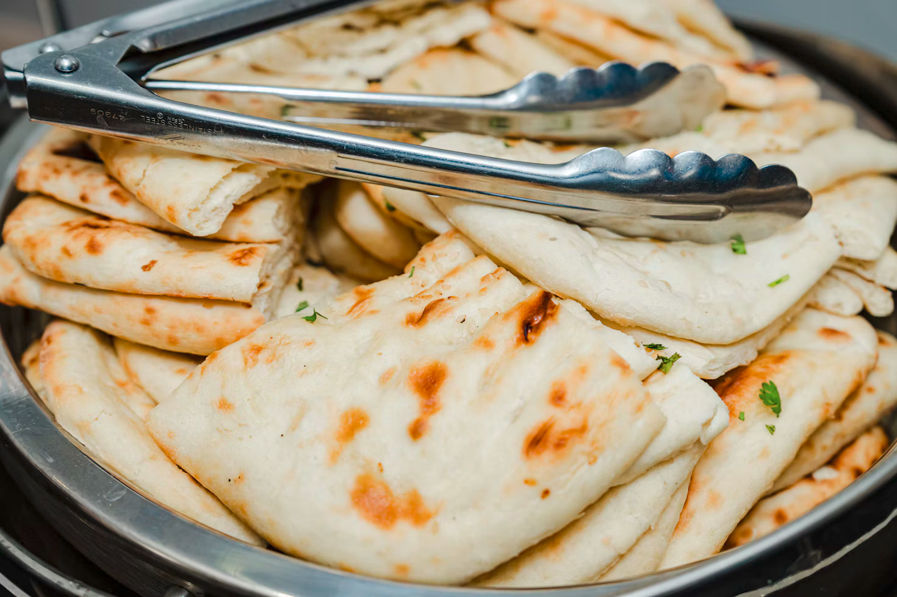

Description
This is a recipie for a simple Naan,
A real nice Dish from the Indian subcontinent.
Ingredients
- 1 kg Flour.
- 10 gr Dry Yeast.
- 4 table spoon Yogurt.
- 2 table spoon Oil.
- 1 table spoon Salt.
- 1 table spoon Sugar.
- 2 eggs.
- A jug of warm water.
- A container for Dry ingredients.
- Another container for yeast activation.
- A tray.
Steps
-
Mix the Yeast and Sugar into warm water mix it
and let it sit for 5 minutes.
-
Soon After Prepare the Dry ingredients.
- Add the flour into the container.
- Add in the Oil, Yogurt and Eggs.
-
Mix them all and Knead them Either with Hands,
Spatula or a Machine.
-
Once the kneaded dough reaches a good soft yet firm concistency
Cover it with a cloth and keep in Warm area for 30 minutes.
(You can warm up the oven a little and keep it there)
-
Once the Dough is done
A good indicator is that It will double up in size
You can start by making little balls of dough and keeping them in the
tray apart from each other.
- Cover them with a Cloth.
-
Wair for 5 minutes, Once they also seem to have doubled in size
you can finally shape them into discs and Bake them in oven.
Alternatively you can cook them on the pan.